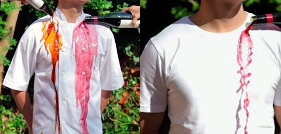
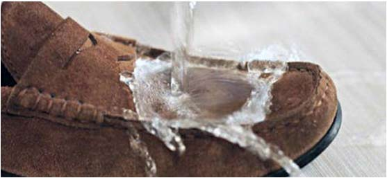

<div id="hydrophobic" class="hydrophobic">
    <div class="container">
      <div class="row">
        <div class="col-sm-12">
          <h2 class="hydrophobic__title">Що таке <span class="hydrophobic__highlight">Супергідрофобне покриття?</span></h2>
          <p class="hydrophobic__desc">і чому воно користується такою популярністю</p>
        </div>
        <div class="col-sm-6">
          <p class="hydrophobic__content">
            <span class="hydrophobic__content-title">"Aquaphob"</span> - 
            це революційне водовідштовхувальне покриття, яке надає унікальні властивості
                            таким матеріалам, як натуральна і штучна тканина, замша, нубук та інші.

          </p>
          <p class="hydrophobic__content">
            Даний засіб не токсичний, не містить органічних розчинників і абсолютно прозорий.
                            Опрацьовані матеріали набувають настільки сильні водовідштовхувальні властивості, що їх поверхня
                            практично не взаємодіє з водою і її розчинами і тому має ефект самоочищення.
          </p>
          
        </div>
        <div class="col-sm-6">
          
          <p class="hydrophobic__content-title">
              Перед звичайними водовідштовхувальними засобами для взуття і одягу Aquaphob має наступні переваги:
          </p>
          <ul>
            <li><span>Водовідштовхувальний ефект значно сильніший, ніж у звичайних засобів;</span></li>
            <li><span>Зберігає свої властивості до 3 місяців, тобто більш ніж в 10 разів довше звичайних засобів;</span></li>
            <li><span>Не містить масла, парафіну, воску, силікону, акрилу, і токсичних компонентів;</span></li>
            <li><span>Не змінює зовнішній вигляд взуття і одягу, повністю прозорий і непомітний засіб;</span></li>
            <li><span>Не міняє паропроникність матеріалів, взуття та одяг дихають;</span></li>
            <li><span>Не містить розчинників, тому не шкідливий для таких чутливих матеріалів як замша та нубук;</span></li>
            <li><span>Не має запаху;</span></li>
            <li><span>Працює на будь-якому типі тканин.</span></li>
          </ul>
          
        </div>
      </div>
    </div>
  </div><!-- end hydrophobic  -->